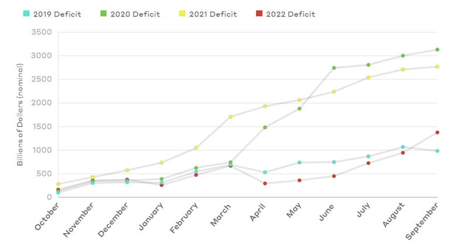

The federal government ran a deficit of $1.4 trillion in FY2022, approximately half the $2.8 trillion deficit incurred in FY2021.
Contributing to this change are both increased revenues ($850 billion or 21% higher) and reduced outlays ($548 billion or 8% lower) than in FY2021.
The expiration of pandemic-related relief spending, such expanded unemployment insurance, certain tax credits, and other public benefit programs, accounts for most of that change.
Spending Changes in 2022 with Decreases
- $486 billion (62%) for refundable tax credits (including Economic Impact Payments and advanced Child Tax Credit payments).
- $359 billion (90%) for unemployment compensation.
- $300 billion (93%) for Small Business Administration programs.
- $138 billion (56%) for federal COVID-19 relief dollars allocated to state and local governments.
- $24 billion (71%) in grants to state and local governments for emergency rental assistance.
Spending Changes in 2022 with Increases
- $176 billion (8%) for Social Security, Medicaid, and Medicare, the country’s largest mandatory spending programs.
- $26 billion (15%) for the Department of Agriculture, primarily for Supplemental Nutrition Assistance Program benefits and
nationwide waivers that increased the number of free school meals during the 2021-2022 school year.
- $121 billion (29%) in net interest on the public debt, primarily because higher inflation resulted in large adjustments to the principal of inflation-protected securities.
- $16 billion (81%) for international assistance programs, due to funds authorized by the American Rescue Plan Act of 2021 and emergency support for Ukraine.
